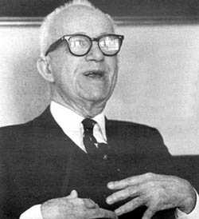

R. Buckminster Fuller has been called the genius of the Twentieth Century and the Leonardo Da Vinci of our time. Chiefly famous for his geodesic dome (the most economical way of enclosing space and a viable solution to the long sought low-cost, self-built housing), Fuller has also scored other outstanding successes as a scientist, mathematician, engineer, inventor, designer, architect, cartographer and creator of such principles as synergetics, tensegrity and ephemeralization.
"Bucky"-as he's fondly known by all his friends-believes in "doing more with less" and that man can solve all the physical problems of his existence-can, in fact, live in a worldof maximum abundance-through the proper utilization of information and energy. This is the philosophy on which he has based his now famous World Game.
Fuller recently conducted several seminars at the New York Studio School in New York City's Greenwich Village. Allan Richards was there with questions about World Game, how it originated and where it may lead.
PLOWBOY: How vital a force do you think the World Game will be on our society? Would you discuss some of its developments, its progress and tell me how optimistic you are about it? Do you think it is the solution to a Utopia-or-Oblivion eventuality?
FULLER: In the first place, World Game is a strategy of the individual and how he can gain adequate information about what he is experiencing in life. We happen to be on board this little, tiny particular planet and it is very important for man to know what's going on. Even at the present time, in his present life, an individual sees-on the average-only one-millionth of the entire surface of the earth. So it is not surprising that through the knowledge of his being on this planet 5 1/2 million years, that up to now man is still thinking that the world is flat, and he still uses the words "up and down". It is perfectly clear that he is oriented that way, and that the world is a sandwich between Heaven and Hell, and goes to infinity. In this thinking, there is then an infinite room to pollute and there are infinite resources to refill the resources we've used up. That's the way he's been looking at it.
Being born helpless with all this equipment, but being ignorant and not knowing the significance of all these things he's dealing with, has been man's plight. He sees the stars and says they are beautiful and mysterious, but he doesn't have the proper orientation about what it all is. The World Game is a way in which the individual begins to inventory what the known experiences of all individuals have been-learning what has been recorded in any way and what has been communicated-and then sees what we have learned about the total thing. Well then, the question is how do you arrange this information so that you can see and feel it?
Assuming you make a sphere, a world globe-and that's a good step in its own right-and find that there is a great deal of difference between theory-knowledge-and the actual way men behave . . . and they behave in relation to their senses in basic reflex patterns. It becomes a very impressive matter when you discover this difference by direct questioning.
For instance, I gave the quarterly address to the scientists at the Massachusetts Institute of Technology faculty club and I found that no scientist will deny that they see the sun going down. Now, we've known for 500 years that the earth revolves around the sun, but their senses see it going down . . . and when questioned, they say it goes down. The way our senses are, is the way we behave in a pinch, you see. When nothing is bothering you, you go along quite freely. But when there's an emergency-we behave in response to our senses. That's where the difference between theory and actual fact is.
My first jobs that I ever had before World War I, were with very skillful mechanics. They always guarded their skills because their families' livelihood depended upon them to do their work better than the other guys in the union. They would only let in a few kids to work because there was no apparent danger of losing their jobs to the kids.
I found all these men illiterate-beautifully informed-but literally with a vocabulary of 100 words . . . half being obscene and blasphemous. And when I arrived with those men, I had a large vocabulary from reading so much. They assumed that my knowledge made me be a sex pervert! So they'd start whistling when I came along. I don't really think I was a sex deviate and I didn't want them to think that I was. Immediately, I took on their language-I became very colorful with my language too. Nobody whistled anymore.
These people's illiteracy soon changed though, but not by them going to school. Along came the radio. With World War I, came radio-the development of voice by air-and not just information transmittal by Morse Code. By 1922, we have the first amateurs getting out-with Major Armstrong's super-hydradyne regenerator-an amplified voice. Five years later, companies were making these and everyone's home became a voice. Everyone rapidly knew about Lindberg's flight across the Atlantic. Suddenly, everybody had this in their home, and it knew things the local people didn't know.
The parents didn't tell the kids anymore, the voice did. It became increasingly authoritative, and so the parents weren't bringing the news home . . . the voice was. And the voice on the radio was always highly literate and had good diction . . . much better than that of the parents. Children suddenly began acquiring better and more beautiful vocabularies.
My daughter was born in that Lindberg year, and she was raised on the radio. She loved to listen to the dance hall music, like Rosie O'Grady. But then the stations played too much of it and there was soon a change towards classical music. Now you had these children getting better musical tastes. So it was a young world acquiring a beautiful vocabulary and the classical music of the world. The children's standards became much higher than their parents'. The standards were raised-not through school-but through the radio.
You can see what a beautiful series of changes was created. And it wasn't the school system-the educational process-that did it. It was simply this new environmental phenomena. A good voice, diction, authority and information coming into your home.
PLOWBOY: You believe that the World Game can be such an environmental phenomena? That more new information can create another series of changes?
FULLER: Yes, that's my point. That new life was coming into the home directly, making the parents and local authorities obsolete. And that is exactly what's happening in today's generation. You are finding all the old schemes very inadequate. When the television came, the children could then see the new ways, and see and hear the changes. I've simply said what changed man was not a change in the theory of the educational system, but the change in the environment. It was only two or three men-Major Armstrong with the radio, DeForrest with the tube-who changed all of humanity. Two or three men not just listening to theory, but converting it into practice . . . into something which changed the environment. And with the newer environment, everyone acted differently.
Under those circumstances, by 1927 when my second child was born, everyone was getting a beautiful vocabulary. I saw that kids understood you . . . you didn't have to talk down to a kid. You did have to talk down to grown-ups. Particularly to the rich grown-ups who weren't even listening to the news. They were even more difficult to talk to.
I said, "I'm so impressed with words as tools; and tools as part of mechanics." I remembered that those mechanics I had worked with knew their tools alright, and I realized that radio was a tool and all electromagnetics was a tool. I became very much impressed with how you can use a tool in changing the environment. Tools are so important and the most important tools we have are words themselves. We can communicate and cooperate and otherwise put them to good advantage.
I think that the most important doctrine man has is the dictionary, with 100,000 words. Mankind seems to have difficulty agreeing on anything, particularly anything important. But here we are with 100,000 terms which we've designated with different meanings. I so respect it, and I figured that if I was going to do something for mankind, I would have to use the right tools . . . the right words.
So in 1927, I resolved never to use blasphemy or obscenity ever again. In obscenity you ask people to co-habitate with animals or people who don't even exist. It's a ridiculous way to talk. You could really say what had to be said in a much better way. I absolutely committed myself 44 years ago never to speak that way. But recently, I was driving my car and saw someone coming out of an alley way. I was going much too fast to stop, and I screamed out-JESUS CHRIST! I didn't want Jesus Christ, but I'm talking to you about conditioned reflex and what man will do in an emergency.
Getting at conditioned reflex isn't easy, and all the scientists seeing the sun go down, say it goes down. Despite the the theoretical way in which you and I want ourselves to work . . . you can not let go. It's beautiful that all the young are acting the way they do and are going along with the truth. But we all have been misinformed and, in pinches, kids too will d o what they've been conditioned to do.
PLOWBOY: The World Game, then, wants to condition people in a more informative, more useful way`?
FULLER: Everyway. I've been concerned with changing the environmental factors, because that is what makes people act spontaneously in a preferred way. That's why I did something like the geodesic dome. I thought, "how can I give man a controlled environment with no columns and no particular which say you can't pass" . . . which already is a negative. Walls are so inherently frustrating and wherever you are, you're locked in.
World Game, which I adopted in 1927, was something I started in 1917 when I was in the Navy. Navy is world, you know: Three-quarters of our planet is water. The kind of ship I worked with was a technological feat. I remember the city of Seattle once had a power failure, so they brought over a big battleship, hooked up to the power lines of Seattle, and lit up the whole city.
This ship was an extraordinary thing. I knew how to command it, I knew how to operate it and I even knew how every piece of machinery worked. And I realized that all this extraordinary technology represented the objective use-the application-of everything pure science had found out about physics, chemistry and mathematics at the time in the universe. And the ship was the only place this knowledge was being totally used.
This brought me back to discover that this was being done-the technology was being used-to kill. The working assumption was based on data coming from Thomas Malthaus. Malthaus' theory said man was reproducing himself at a geometric rate and producing goods to support himself at an arithmetical rate, therefore the world was a closed system. Sooner or later, no matter how much praying you did, it wasn't going to do any good.
Man was thinking in infinite-sandwhich empires and Malthaus-with his spherical world empire thing-said it didn't work . . . that the world was a closed system. And the leaders-the people who decided how technology was to be used-were listening to him.
So Malthaus said there was only so much, Darwin said, "survival of the fittest", and Karl Marx said that the worker is the fittest because he knows how to handle the seed and use the tools and that everyone else is a parasite living off the worker. The parasite people say they are the best informed and best equipped and-therefore-the fittest. But all governments and bureaucracies, today and then, believe there isn't enough to go around and that we are going to have Armaggedon . . . the big showdown in which millions are going to die.
PLOWBOY: How do you think the World Game can stop Armaggedon?
FULLER: Last year, the United States, NATO, Russia and China had a combined military budget of 200 billion dollars. Two hundred billion dollars for man getting ready to kill another man. Where I came into this picture, back in the Navy, I learned that all this technology was being used for Armaggedon. So I said, "We have electric refrigeration on this boat." Malthaus didn't know we would have that. And we had boilers, electric generators, desalinazation, air-conditioning: These were developed on the boat 50 years before they came onto the land.
"All the capabilities on that ship could be used for peaceful reasons," I said. "Malthaus didn't know about refrigeration and he didn't know that you could freeze food and ship it from here to there." And then I studied his calculations and saw that you really could integrate the resources of the earth. I began to look at the World War Game and began to cut away the boundaries and look at the globe as a whole. I saw where certain products were and were not and how we could use these resources so that there would be enough for everybody. By 1927, I left the Navy.
I was soon into building and had 240 small buildings up. I slowly saw the boilers, burners, and radio coming from the battleship onto the land. So I modeled a World Peace Game after the World War Game . . . eventually dropping the word "Peace", because even when there's peace after a war, one side wins and eats, and the other side starves.
PLOWBOY: Was it at this point that you figured we could produce and distribute enough food?
FULLER: That's right. I tried to design my World Game by getting total information and getting people into the right environment so that they would be successful, and so that they could act spontaneously and do the logical things.
PLOWBOY: What realistic situation could be created to make man do the logical things?
FULLER: Man in his ignorance thought there wasn't enough to go around and so he had to earn a living. He had to prove his right to live, so that he could die. That's the Malthaus viewpoint. But when a child is born and comes out of the womb you don't immediately say, "What are you going to be, a plumber? Get back into the womb!" I thought that if I could convert the environment and really produce enough for everybody, then it could be said that everyone is welcome and we all can live without perverting ourselves to make a living. We can, rather, think, "What needs to be done?" That's the reason you come to me with a tape recorder: You figured out what needs to be done and you are doing a magazine. And she's taking pictures with the camera and a lens that used to be silicone crystals.
If everyone had the right environment, they could logically think out what they had to do, and do it.
PLOWBOY: Wouldn't feeding everyone exhaust the soil?
FULLER: In the farming thing, yes, you do use up the food and something is spent. But the technology doesn't get used up and it can keep man going forever. The materials are there and it's a matter of using the right technology. By employing the right technology we can figure out where to get the materials and how to replace them and take care of all humanity. That was clear to me in 1927.
What I call World Gaming, then, tells you what needs to be done for humanity. The World Game told me what I needed to do. The first thing I figured out was what inventions could be used by man to change the whole society. I catalogued the inventions and scheduled what I thought had to be done. Gradually, as the years passed and the need for these inventions occurred, young people began reading what I'd published and sought out my methods.
PLOWBOY: How has the young world gotten involved with the World Games:'
FULLER: There are large numbers of people who play the World Game with me. Instead of learning from me theoretically, they've seen that it is through personal exploration of data that we've assembled, they've seen how personally they could do things to make the world work. They experience it instead of hearing me say it. The World Game is proliferating very rapidly.
I know 14 universities have the World Game as a credit course and I know over 200 universities where they have it around the world. The young people now come together and work together, live together, pooling information to do the needed things. Gradually, literature is proliferating and so are the dome structures.
Dome structures are easy to figure out, and can be made out of paper, wood or old car parts. I've been to 276 universities around the world teaching the dome structures. You can buy a car top for $.50 and figure out the mathematics to make a geodesic dome. It's safe, withstands hurricanes and is fireproof. Domes are proliferating at a rapid rate . . . over 40,000 in 50 countries in only 18 years. I'm not a promoter but I give information when asked for it. The only reason I got a legal patent on this invention is to protect myself against the big corporations; they would have run me down and you'd probably never have heard of me because it was the geodesic dome which made me popular.
PLOWBOY: Have you been using the geodesic domes on a large-scale? That is, for cities?
FULLER: I'm working on one to cover eastern St. Louis. It would house 30,000 people in a 1/2-mile-long area. It would be an umbrella structure.
PLOWBOY: How useful is this ecologically? Is it a remedy to large city problems?
FULLER: Fundamentally it is excellent. It would recirculate wastes and water and not pollute. It is very conservationally-minded. I don't know if we will see domes over old cities because there are so many conditioned reflexes involved. I expect to see them over new places. I'm putting a dome up now exactly over the South Pole of the earth. It is an enormous controlled environment. They've found that there's a large lake frozen one mile deep below the ice with extraordinary geological information. They needed a large covering, so we are building a stainless-steel geodesic dome. It will be like a small city and people will be able to walk about "outside" within the dome with just an overcoat . . .
PLOWBOY: What have been some other inventions which "do more with less?"
FULLER: One important area which I have examined is plumbing. A lot of scientists are now looking into the dry-packaging of human waste instead of dropping it into water. I've worked out a toilet system that has the human wastes falling into a package that sits on a conveyer belt. When the package is full, the conveyer moves it out and it's picked up. The human wastes can then be used as fertilizer. There's nothing wrong with human wastes as fertilizer. There's enough energy in the wastes of a family of four to power their car. Dry-packaging is a good thing and we should use this chemical fact instead of polluting as we do.
Shunting things in the right direction-realizing that nature has no pollution and that all the chemistries are necessary-is the important point.
|
 |
|
|